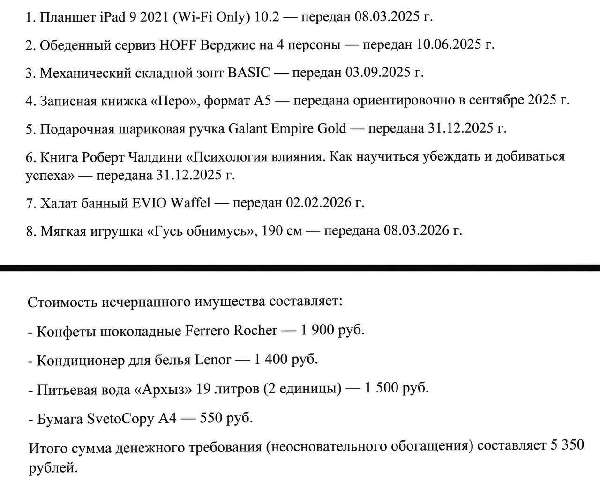

Москвач • Новости Москвы
@moscowach
Москвач • Новости Москвы
@moscowach
Коробку конфет Ferrero Rocher шариковую ручку и игрушку Гусь-обнимусь потребовал через суд вернуть бывший парень москвички Baza.

🙂 Коробку конфет Ferrero Rocher, шариковую ручку и игрушку «Гусь-обнимусь» потребовал через суд вернуть бывший парень москвички — Baza.
Парень подсчитал все подарки за год и потребовал 5350 рублей за сервиз, халат, игрушку, съеденные конфеты и даже 19 литров воды «Архыз». К сумме он также добавил 4 тысячи рублей госпошлины.
Девушка решила не судиться и перевела мужчине 7 тысяч рублей — после этого претензии закончились.
Парень подсчитал все подарки за год и потребовал 5350 рублей за сервиз, халат, игрушку, съеденные конфеты и даже 19 литров воды «Архыз». К сумме он также добавил 4 тысячи рублей госпошлины.
Девушка решила не судиться и перевела мужчине 7 тысяч рублей — после этого претензии закончились.